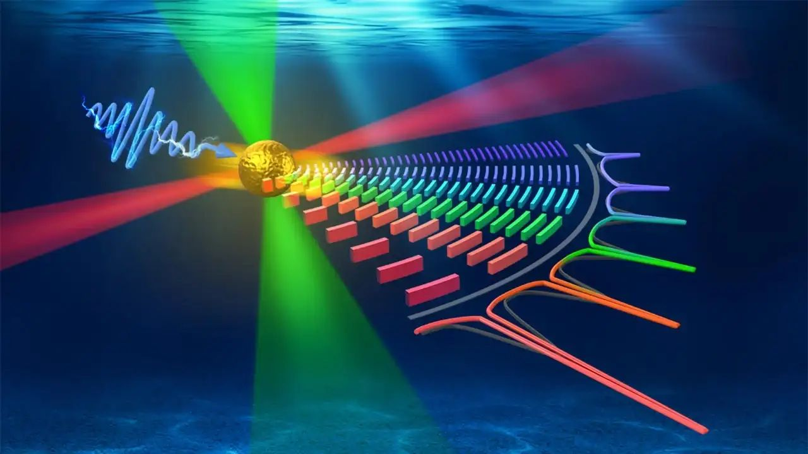
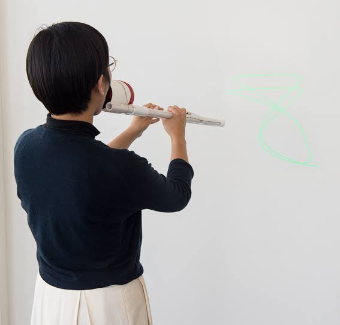

SCENE 01
THEATER DOCUMENTATION
The Theori
Momen Ketika cahaya dipengaruhi gelombang suara.
A collection of memories, creativity, and experiences from our theater performance.
Dokumentasi kegiatan Project Fisika Membuat gelombang yang bisa terlihat

SCENE 01Momen Ketika cahaya dipengaruhi gelombang suara.

SCENE 02Salah satu Konsep yang akan di lakukan.
Bukan hanya tentang penampilan, tetapi juga tentang kerja sama, keberanian, dan kenangan yang tercipta di balik panggung.